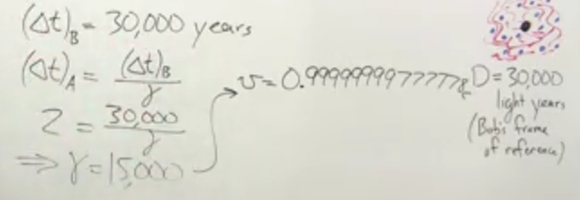

Well, thanks to coursera, now I know a little bit (very-very little) about it. What follows are the key points, which I found are needed to get a general idea about relativity, as taught in the course: Understanding Einstein: The Special Theory of Relativity. I can't thank Prof. Larry Randles Lagerstrom, enough for this course and the very simple and enlightening way in which he teaches it.
- These are my interpretation, which were not directly mentioned (but in most cases seems obvious to me, and I hope these are obvious to you/others as well).
- Simple color (black): Something directly taken from the course.
Searching for Ether wind: Michelson-Morley experiment
Background
Waves, like sound waves, water waves, require a medium to travel. In fact these waves are nothing but disturbances (rather information) carried by local movement of stuff in the medium. No actual stuff is carried. Since, light is also a wave, so what is it's medium? It was called Ether (this was around and before 1900's). Unfortunately it was difficult to perceive it.One thing about waves is, when the source producing the waves moves, it doesn't change the speed of the wave, but merely change the frequency (Doppler's effect). But effective speed of waves changes when the medium carrying them moves. Like for sound waves, their speed in the direction of wind increases (and decreases in opposite direction). Based on this, Michelson and Morley devised a very precise experiment in 1887. At that time it was being postulated that whole universe is filled with Ether, which is the medium for light to travel. Since Earth is also moving around sun, and thats too at a very high speed (30,000 m/sec), thus wrt (with respect to) Earth, Ether must be moving. It was called Ether wind. Thus if we measure speed of light when the ether is moving in the direction of light, we should see light traveling faster as compared to when it is perpendicular (opposite also, but experiment was devised like this) to it.
Experiment
The exact time difference is shown in the figure below (taken from course video of Week 3, part: The Michelson-Morley experiment part 4). For derivation, and set-up kindly refer to it's previous parts as well). Here v$_w$ is speed of the Ether wind and c, of course, is the speed of lightResult
To the surprise of everyone, effectively no time difference between the light waves traveling in and perpendicular to, supposed Ether wind, was observed. The experiments were done over and over again, at different places over many decades, but they all showed that there is no Ether wind. It became a problem and few theories were suggested on why we are not observing the Ether wind. Most promising of which was: as earth moves along, it is dragging Ether with it. So on the surface of Earth, we can't feel the Ether wind.Stellar Aberration: No Ether Drag
In 1720s, James Bradley, an astronomer, was trying to detect the distance of the star using parallax (just like our eyes, detect depth). He took measurements of the same stars, 6 months apart (i.e., when earth is at the two far extreme in it's orbit around sun). He expected to see a slight difference in the stars position. Actually, stars were/are too far for this to work. However, he found that for the two measurement, he needed to tilt his telescope slightly. But why?The tilt could be understood, as the same tilt, which we apply to umbrella in the rain. Tilt is needed for umbrella, coz, we are moving. Similarly earth is moving and star light, like rain drops, are falling perpendicularly. This is shown in the figure below (Taken from Week 3, Stellar Aberration video). The tilting is shown in Case 2, figure at bottom, where light is captured as telescope was tilted. Has the telescope not been tilted, due to movement of earth, the light would have hit the sides of the telescope.
The tilt needed was very small (as speed of earth is very less as compared to speed of light), but nevertheless it was needed, and it is found that amount of the tilt is precisely what would be needed due to rotation of earth.
This clearly showed that, earth does not drag Ether as it moves along.
Einstein theory of consistency (known also as special theory of relativity)
Einstein at this time, 1905, was a clerk at Patent office. He was analyzing various patents related to time synchronization in railways. May be because of this, or independently of it, he postulated two very simple principle:- Principle of light consistency: Speed of light is always constant and is c, irrespective of frame of reference of observation.
- Principle of relativity: Time is suspect (to account for the above fact)
- Time passes differently for different frame of reference
- There is length contraction for moving objects
- Nothing can travel faster than speed of light. If one would start approaching speed of light, time would slow down for them
Frame of reference, and synchronization of clocks
In special theory of relativity, we deal with constant speed. All the stuff, which is constant (at rest) wrt each other is in one frame of reference. For example if Alice is traveling in her spaceship then she and her spaceship is in one frame of reference, and Bob who is on Earth is in a different frame of reference with Earth. For simplicity we would consider movement in only 1 axis (in 3D), say x-axis.We would be dealing with measuring events at different location and time. Before we measure events, we would like to be sure that all the clocks are synchronized, i.e., in one frame of reference events are measured at the same time, at all location. To do this consider/allocate a point as origin, i.e., set x=0 for that point. Further imagine that there are clocks places everywhere on the axis. Also each clock knows it's (rest) distance from origin.
From origin, send a light pulse in both +ive and -ive direction. As each clock receives the light pulse, it set's it's time as t = it's distance from origin / speed of light.
This, 'lattice of clock' (in out thought experiment), would help us know precisely when something happens at a particular point, in one frame of reference
Moving clocks run slowly
Consider a special clock as described: Suppose we have light pulse detectors and generators. We generate a light clock, it bounces off a mirror (placed at a fix distance) and comes back, where we detect it. As soon as we detect it, our clock counts one tick. Since distance between mirrors are fixed and speed of light is fixed, we can measure time accurately.Now consider the case when Alice is flying in her spaceship, let's say towards right, with a fixed velocity. Also imagine that this special clock is set-up in such a way that distance between mirrors is perpendicular to the direction in which she is traveling. Now let's see how, Bob and Alice would notice the time as it passes on this clock. We would consider speed of light as always constant, no matter from which frame of reference we are measuring it.
Alice would see that light simply needs to travel distance 2L, but as Alice spaceship is moving, Bob would observe that light is actually following distance 2D as shown, which is more than 2L. So what does Bob conclude? Alice clock is running slow. Please note here, although we started with special clock, but if Alice have an ordinary clock as well with her, it will also show time passing exactly in the same way as this special clock is showing. So Bob's lattice of clocks, if they record an image as Alice pass by that point, would actually show what Alice is seeing. Thus time has to actually pass slowly for Alice, as noted by Bob. The exact time difference is also shown in the figure above. Here $\gamma$ is called the Lorenz factor and we'll see it again and again. Please see that it is alway >= 1.
Also note, this is happening coz there is no Ether. Has it been say a sound wave, then it's velocity would have increased as observed by Bob coz the mdium for it would have also been moving wrt Bob. But nature of universe is such that, light always travels with speed c, and it's the other things like length and time, which changes from one frame of reference to the other. Has the universe been not like this, we had no hope of answering the ultimate question of life universe and everything, (I mean someday we'll figure it out).
Taking a bit of digression here, world is obviously not how Newtonian physics describes it. We know that after couple of billion of years or more, all stars would have used their fuel and all lighter elements would have fused to produce heavier, more stable, elements. So in some sense Universe would die. But as of now, Universe is not dead (meaning their are active energy sources like stars). So obviously this means that: 'time has a beginning'. We explain it by Big-bang, but we still do not know if there was something before that, what exactly caused it? Why/How universe or Energy or matter exist anyways? So clearly there are plethoras of mysteries, which I humbly hope, would be deciphered.
Length Contraction
Now, as time passes differently from one frame of reference to the other (different frame of references are simply object/stuff moving relative to each other at constant velocity), to keep things consistent, length of stuff as observed in one frame of reference, from other frame of reference, needs to change. Consider the case where Bob is at earth and Alice is flying to the right. For Alice, Bob is moving towards left. Consider that Bob is also in his spaceship, which is stationary and has some length and two synchronized clock is placed at front and rear of it as shown.Now, as we have seen previously, time passes differently for Alice and Bob. So, when, they both measure the length of the Bob's ship as shown in the figure above, something interesting would happen. Further calculation would give us:
and, thus we have length and time dilation as:
So as observed from stationary frame time passes slowly in moving frame of reference and also length gets contracted. But since moving frame of reference sees the stationary frame of reference moving, it will also observe the same things for stationary frame of reference. Wow!, so lets say that time as observed by stationary frame of reference is 1, then on moving frame of reference time only passes as 1/$\gamma$. But during this time, moving frame of reference would observe that only 1/$\gamma$ of it's time has passed on in stationary frame of reference which is 1/($\gamma^2$). Ain't this a contradiction!! Well, what we would find out is: from stationary frame of reference leading clock in the moving frame of reference lags!!
Lorentz Transformation
Before we see how leading clock lags, we note that the above equations could be extended to transform any time and place from one frame of reference to the other as:The case at top is when object is moving to the right, and below is when object is moving to the left.
Leading clock lags
Consider another thought experiment, where Bob is flying in his spaceship and Alice is observing him, as shown in the figure below:Here, a beam of light is flashed from the middle of the ship to both front and end (ship is moving, defining front and end). Now as Bob would observe the flash of light, it would hit both front and end at same time in his frame of reference.
But Alice would observe that, while the light beam started at the same time from center, it reaches the two ends at different time in her frame of reference. Why? Coz she will observe that light is traveling at speed c only, in both direction. So if we assume that light takes $(T_A)_{rear}$ to hit the rear end, then by that time rear end would have traveled a little ahead. Thus from Alice perspective, light beam would travel less distance in the backward direction then the forward direction. Quantitatively, in $(T_A)_{rear}$ time, ship would move v*$(T_A)_{rear}$. Thus Bob can only see these events as simultaneous if, from Alice point of view, clock at the front (leading) is actually lagging behind the rear end. Expanding on this we would get, the time difference between the two clocks as:
Please note, here we have also accounted for the fact that, Alice would observe Bob's ships length as what would Bob observe/$\gamma$. Now instead of ships length, we can extend it to any arbitrary distance D (from origin). Thus as shown above we can quantify how much the leading clock lags.
The ultimate speed limit
We observe that as objects start traveling faster, time starts slowing down for them, that is if: time $\Delta$t passes for them, for outside world $\gamma\Delta$t has passed. Thus to the outside world, effectively they are not traveling as fast as they feel they are!! (And they themselves are traveling slowly as effectively they would see outside world getting contracted). So, from outside observer perspective, is there an speed limit? Let's try to quantify it:Combining Velocities
Let's assume Bob is moving in his spaceship at speed v, as Alice is observing him from Earth. In his frame of reference, by definition Bob is stationary. Now he throws an Escape Pod at speed u, wrt his frame of reference. So what would be velocity of Escape Pod as observed by Alice? Shouldn't it be V + u? Let's try to quantify it by taking into account time dilation and length contraction!We are calling Bob frame of reference here as rocket frame of reference and Alice frame of reference as Lab frame of reference. Let's see what would be the relationship between time difference between two events in rocket frame of reference and lab frame of reference. From previous equation of time dilation and length contraction, we could derive it as:
Now, speed of the Escape Pod as observed from rocket frame of reference would be $\Delta$X$_r$/$\Delta$t$_r$. Where:
- $\Delta$X$_r$: Distance traveled by Escape Pod in rocket's frame of reference.
- $\Delta$t$_r$: Time taken by Escape Pod to travel the above distance, in rocket's frame of reference.

Let's analyze this result. When u and v are negligible wrt c, as in our day to day experience, denominator would be almost 1. As the term which we are adding to 1 is getting divided by c$^2$. Speed of c is 3e8m/sec. Thus even for jet planes velocity, we can easily ignore it's effect. But observe what happens when u and v are comparable to c. If one is 0.9c and one is 0.7c, the net velocity as observed by someone in Lab = 1.60c/1.63 which is again less that c!!! In fact if we put u as c, then also net velocity as observed by someone in lab would be only c. Not even slightly more. Thus c is an asymptotic maxima on speed!!!
Some final comments (on Special theory of relativity)
What we have derived so far are, (by simply observing the consistency of speed of light in all frame of reference):- Moving clocks run slow.
- Further, leading clocks lag, i.e., show time less than rear clocks.
- Length contracts, as object starts moving.
- Speed of light is the ultimate speed and can-not be achieved by anything but light.
Trip to the center of galaxy
But observe that, all this is happening from a frame of reference outside the moving frame of reference!. And moving frame of reference would see all this happening to the rest, frame of reference (which is moving wrt it). So suppose Alice, decides to go to the center of galaxy and come back. Center of Galaxy is about 30K light years away. And she wants to go in just 2 years!! in her frame of reference. Please note as she would start moving, the distance would get shortened for her. She needs to travel at a very high speed, almost close to c. So we can get Lorentz factor $\gamma$ for 2 years as:
So what's happening here?? She covered 30k light years in just 2 years?? Yes, but note time has slowed down for her. Ppl on Earth would see that she is moving only at speed ~ c. And thus is taking about 30K years to complete the journey!!!
But can human body takes that much speed. Well we can withstand easily acceleration of 10m/sec (Earths's gravity), so if Alice spaceship is accelerated with this speed she would take 3e7 seconds to achieve the desired speed. Which is less than a year!!
So in theory one can complete a trip to center of Galaxy in their lifetime, but when they would come back to Earth, all their relatives/friends would be long gone (unless some breakthrough in medicine extends our life, which I am quite optimistic about).
What happens if Alice travels at speed c to the center of galaxy
Well, for her, distance would become zero! Thus she would reach the center instantaneously in her frame of reference. But earth ppl would see her spaceship length to be zero, and her taking 30K years to reach the center.So is she behaving like a wave? She is present everywhere in the galaxy at the same time (in her frame of reference)! I would have loved to chase the answer, but may be after my PhD or my next life.
Twin paradox
Before ending this writeup, on special theory of relativity, let's consider the famous twin paradox. The paradox is: Suppose Jack, Bob's twin brother decided to go to the nearest star which is say 3 light years away. His rocket can travel at speed, 0.6c, such that $\gamma$ is 1.25. So he would take 5 years to reach there and now he comes back with the same speed and reaches earth in 10 years. All this calculation was wrt Earth frame of reference. And also, from Earth we would observe that time for him is passing slowly so he would complete the trip in just 10/$\gamma$ years which is just 8 years. So Bob would actually feel that only 8 years have passed. So when he comes back, Bob would have aged 10 years and Jack only 8 years. But the thought experiment does not end here (else where is the paradox)Now as Jack is moving away, he would see Earth flying by and thus would observe that for Bob time is passing by slowly. So what he would observe is that Bob should only age by a factor of $\gamma$ as compared to him. Which comes out to be 8/$\gamma$ = 6.4 years. So who is younger, once Jack returns back to Earth?
Let's try to analyze, if the situation for both Bob and Jack is exactly similar or not. In the first look everything looks same, where one is moving wrt other with exactly same speed, but in opposite direction. But let's analyze closely, what happens when Jack reaches the star. He needs to de-accelerate and take a U turn (we are assuming that time taken for this is quite low, and could be ignored). So he would feel this, but Bob would not feel anything. So resolution of paradox is likely to be here. A careful examination reveal that, while Jack is taking a u-turn, he is also changing his frame of reference. Along with this, the fact that leading clock lags, something interesting would happen when Jack is taking the u-turn. This has been explained in the figure below. Here we are plotting a space-time diagram.We are showing the rocket position in space time, where space here is just in one axis (from Earth frame of reference).
Red line indicates how Bob would see Jack traveling. Dotted green line are showing how Jack is seeing time on Earth when he is at the star.
In the first case, when Earth was going away from Jack, by our result of: 'leading clock lags', time as Jack would see in Earth's frame of reference would be futuristic near star, and compared to it, past on Earth (For Jack, Earth is moving away and hence leading). In fact when he starts from earth at time t = 0, time on star was: 1.8 years. So when he reaches the star, while he would have aged just 4 years, he would see that star's time in Earth frame of reference would be 1.8 + 4/$\gamma$ = 5 years. But on earth at this time only 3.2 years would have passed (in Jack's frame of reference). Please note, he would see earth traveling so time on earth is slowed for him. But when he takes the u-turn, his frame of reference get's reversed. And as he would start approaching earth, now earth is lagging and star is leading, for him (Earth is coming towards him). So now, time on Earth would become futuristic for him. Same calculation would apply and time on Earth would become: 5 + 1.8 years (in Earth frame of reference, as observed by Jack), while on star it is only 5. He would see that while time on his ship passes 4 years, clock on Earth would only tick 3.2 years. Thus when he would reach earth, time on Earth would be 6.8 + 3.2 = 10 years. So in total Jack have aged only 8 years but Bob has aged 10 years!!. While so far no one has traveled to any star, it has been observed that radioactive atomic particles decay slowly if they are accelerated to speed closer to c.
The pole and Barn Paradox
Suppose Bob is traveling in spaceship which has a Barn, and Alice has a pole of certain length with her. Suppose the rest length of Barn is less than the pole length, but Bob's speed is such that he sees poles length less than or equal to Barn. So he thinks pole could fit inside his barn. But Alice, who sees Barn even more contracted clearly see that it's not possible. Bob, when he passes over the pole, takes two snapshots at the same time, in his frame of reference, one at the front of barn and one at the rear, and shows to Alice that he is right. But what does Alice observe? Well, here also the resolution of the paradox lies in the fact that leading clock lags. So while Bob sees his clock synchronized, Alice does not see it, in fact she notes that front clock of Bob is running slower. So when the front of the Bob's ship was taking snapshot, rear end of Barn has already crossed the other end of the pole, for Alice.General Theory of relativity
In previous section, we saw that when things are accelerating something strange was happening coz their frame of reference was changing. Is there more to it? Einstein observed that when traveling in a lift, when lift starts ascending, one feels more weight and when it descends, one feels less weight, as if gravity have become less. So he postulated that effect due to gravity and acceleration should produce similar result (principle of equivalence). I am sure there must be more evidence for this, before Einstein claimed it. Now see what happens when light enters an accelerating escalator. The path traced by it from observer outside the lift and inside the lift has been shown (things are greatly exaggerated):. So what has happened:
- Light has bent due to acceleration, thus gravity should also bend light.
- As light is tracing more distance for the person in the lift, time for the person must be passing slowly!! I guess what interstellar movie tried to depict and exaggerate.
Is all this real? and worth it (i.e., it's application)
Several experiments have been conducted which has proved that these theories are indeed correct. Now coming to the application:- Accurate GPS tracking: As GPS satellites are at high altitude, they feel less gravity (making their clocks ticks some 42ns/day faster, and since they are traveling at a high speed, time passes slowly by about 7ns/Day for them. Thus if the time is not compensated, they would drift by ~ 11km/day.
- Einstein later, using these theories found out that Energy = $\lambda$mc$^2$. Which led to the usage of fusion and fission and reaction (some of which are good).
- This changed the science for ever and gave rise to quantum physics, and almost all our electronic devices work on it.
- Someday it would pave the way for us to travel to far corners of galaxies in our lifetime.